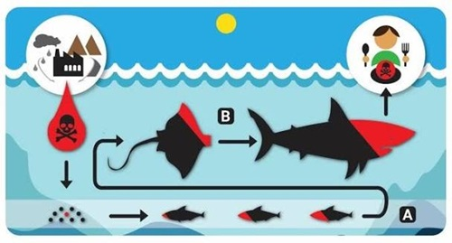

Veneno Invisible: La Reacción en Cadena de la Bioacumulación
El peligro más letal de un vertido de petróleo es, paradójicamente, el que no se puede ver. Mientras los esfuerzos de limpieza se concentran en retirar la densa capa negra de la superficie, los compuestos químicos más ligeros y volátiles del hidrocarburo, como los hidrocarburos aromáticos policíclicos (HAP), se disuelven silenciosamente en la columna de agua. Estas sustancias son toxinas microscópicas invisibles de una persistencia extrema que no se degradan con facilidad. Al entrar en contacto con el océano, son absorbidas de inmediato por el fitoplancton y el zooplancton, los eslabones microscópicos que alimentan a todo el ecosistema marino, iniciando una reacción en cadena devastadora.
A través de un fenómeno biológico conocido como bioacumulación, el veneno viaja y se amplifica a lo largo de la red trófica. Cuando los peces pequeños se alimentan del plancton contaminado, las toxinas se almacenan de forma permanente en sus tejidos grasos, ya que sus organismos son incapaces de metabolizarlas o expulsarlas. A medida que subimos en la cadena alimenticia, cada depredador absorbe y concentra la carga tóxica de todas las presas que ha consumido. Para cuando el contaminante llega a los grandes depredadores como los atunes, tiburones, delfines y ballenas, los niveles de concentración química son miles de veces superiores a los del agua circundante, provocando fallos inmunológicos masivos, tumores y esterilidad.